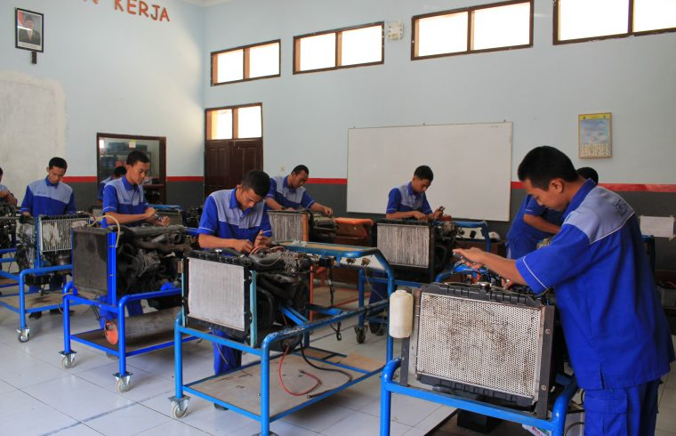
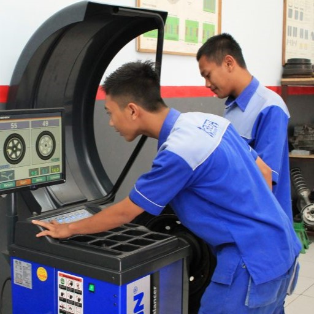

Sekilas Pandang Jurusan TKR SMKN 1 Kepanjen

.png)
.png)
Profil : Program Keahlian TKR mempelajari tentang seluk beluk kendaraan ringan yang didukung oleh sarana dan prasarana sesuai dengan standar industri, mentor-mentor yang ramah dan kompeten, hingga dukungan industri berskala internasional dari segi peralatan hingga pengetahuan tentang teknologi otomotif terbaru.
Profil : Program Keahlian TKR mempelajari tentang seluk beluk kendaraan ringan yang didukung oleh sarana dan prasarana sesuai dengan standar industri, mentor-mentor yang ramah dan kompeten, hingga dukungan industri berskala internasional dari segi peralatan hingga pengetahuan tentang teknologi otomotif terbaru.
Visi TKR : lulusan yang kompeten dalam bidang otomotif dan memiliki daya saing global yang diiringi dengan keimanan dan ketakwaan terhadap Tuhan Yang Maha Esa serta berkarakter bangsa Indonesia.
Materi Pembelajaran : Gambar Teknik Otomotif, Teknologi Otomotif, Dasar Teknik Otomotif, Pemeliharaan Mesin Kendaraan Ringan, Perbaikan Chasis Kendaraan Ringan, Perbaikan Kelistrikan Kendaraan Ringan dan Produk Kreatif dan Kewirausahaan.
Peluang Kerja : di Perusahaan Berskala Internasional, bekerja sebagai mekanik otomotif, staff Teknik Perusahaan Otomotif, Berwirausaha bengkel otomotif dan banyak lagi.
Kerjasama Dunia Usaha / Dunia Industri : PT. Yamaha Musical Product Indonesia (YMPI), PT. Pama Persada Nusantara dan Indonesia Learning Centre (ILC)
Lomba/Event yang pernah diikuti siswa TKR (2 tahun terakhir) :
LKS SMK Tingkat Kab. Malang Bidang Lomba Teknik Sepeda Motor Tahun 2018.
Lulusan (Alumni) siswa TKR : Melanjutkan studi di universitas negeri/swasta, berwirausaha dan bekerja.
